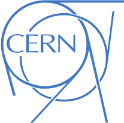
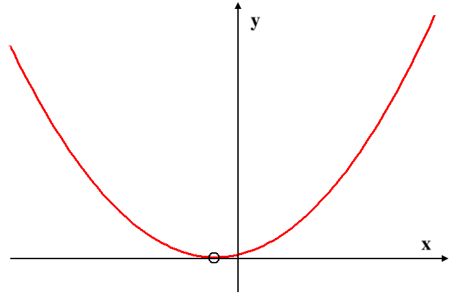

# SONDEAR EL EPIGENOMA ## <div align="center" style="color: #3b89fd"><storng>Sistema Interactivo de Sonificación Epigenética</storng></div> <!-- Link to the app here--> ### Esta <a href="https://beast.cal.bham.ac.uk/sounding/index.html" style="color:#d1a727" target="_blank">APLICACIÓN</a> ES UNA PLATAFORMA EN LÍNEA EN LA QUE CUALQUIERA PUEDE SONIFICAR DATOS EPIGENÉTICOS TOMADOS DEL ROBLE INGLÉS! <br> <br> <br> Haga clic en la flecha hacia abajo en la esquina inferior derecha de la pantalla <br><br> o <br><br> Presione la tecla de flecha ABAJO en su teclado
¡ESTE VIDEO NECESITA SER CAMBIADO! <br> <video class="stretch" controls data-autoplay src="media/IPSOS_demo_video.mp4" style="background:none; border:none; box-shadow:none; min-width:460px; zoom:200%;" title="IPSOS app" width="55%" height="auto"><em>¡Ups! Lo siento, parece que tu navegador es antiguo. Intenta actualizarlo o usar uno diferente para reproducir este video.</em></video> <figcaption align="center" style="opacity:0.5; font-size:0.75em;">¡ENCIENDE TU SONIDO!</figcaption> <br> <br> <!-- Link to the app here --> La <a href="https://beast.cal.bham.ac.uk/sounding/index.html" style="color:#d1a727" target="_blank">App Sonificando el Epigenoma</a> fue desarrollada como parte de una colaboración entre la Universidad de Birmingham, el proyecto MEMBRA Treescape, la Universidad de los Andes y el Centro Nacional de las Artes (Bogotá, Colombia). Este proyecto utiliza la práctica de sonificación de datos para generar conciencia y compromiso con la ciencia. A través de talleres y actividades que apoyan la creación de herramientas y recursos a medida, creará impacto para una variedad de usuarios, incluyendo artistas, educadores, el público interesado en la ciencia y personas con discapacidad visual.<br><br> Aquí puedes explorar y jugar! El sitio web también contiene información sobre la ciencia de la Epigenética, Sonificación de Datos y Síntesis de Sonido, si deseas descubrir más sobre la teoría detrás de la aplicación. <br><br><br> Usa las flechas ARRIBA/ABAJO en tu teclado o en la esquina inferior derecha de la pantalla para navegar entre secciones dentro de un tema. Usa las flechas DERECHA/IZQUIERDA para navegar entre temas. Usa el botón de menú en la esquina inferior izquierda de la pantalla para acceder a cualquiera de los recursos. <p align="center"> <br><br> <a href="#/instructions"><strong><em>¡Haz clic aquí para obtener instrucciones detalladas sobre cómo usar la aplicación!</em></strong></a></p>
<strong>El proyecto Sonificando el Epigenoma es una colaboración entre:</strong> <br> La Universidad de Birmingham <br> Universidad de los Andes <br> MEMBRA <br> Centro Nacional de las Artes <br> Se basa en la investigación realizada para el proyecto <a href="https://www.birmingham.ac.uk/index.aspx">IPSOS project</a> (Sistema de Sonificación de Física Interactiva) emprendido con el proyecto <a href="http://artcms.web.cern.ch/artcms/dark-matter-music-meets-physics/">art@CMS</a> project. <br> ---- <br> <strong>Miembros del equipo:</strong> <br> Dr. Joe He (Científico Ambiental) <br> Dr. Marco Catoni (Científico Ambiental) <br> Prof. Santiago Lozano (Compositor) <br> Prof. Jorge Gregorio García (Compositor) <br> Prof. Scott Wilson (Compositor/Programador) <br> Dr. Milad Mardakheh (Compositor/Programador) <br> Dr. Konstantinos Vasilakos (IPSOS) (Compositor/Programador) <br> Dr. Tom McCauley (IPSOS) (Físico/Programador) ---- <br> <p align="center"> <a href="https://www.birmingham.ac.uk/index.aspx" style="margin-right:62px;" id="uob" target="_blank"><img src="media/UoB_logo.png" style="background:none; border:none; box-shadow:none; min-width:380px; max-width:675px;" width="25%" height="auto" title="The University of Birmingham" alt="UoB_logo"></a> <a href="https://home.cern/" style="margin-right:140px" id="cern" target="_blank"></a> <a href="http://www.beast.bham.ac.uk/offspring/beer/" style="margin-right:130px" id="beer" target="_blank"><img src="media/BEER_logo.png" style="background:none; border:none; box-shadow:none; min-width:80px; max-width:140px;" width="5.4%" height="auto" title="BEER" alt="BEER_logo"></a> <a href="http://artcms.web.cern.ch/artcms/dark-matter-music-meets-physics/" id="artcms" target="_blank"></a> </p>
# Epigenética
## ¿Qué es? <br> <table style="border: 0px; text-align: center; width: 80%;"> <tr> <td style="text-align: center;"> <img src="https://upload.wikimedia.org/wikipedia/commons/7/72/Royal_Oak_Tree.jpg" style="background:none; border:none; box-shadow:none; min-width:500px; max-width:1900px;" title="En Oak" width="100%"> <figcaption align="center" style="opacity:0.5; font-size:0.75em;"> <em>Imagen: Wikimedia Commons: RegalShave</em></figcaption> </td> <td style="width: 10%;"></td> <td style="text-align: center;"> <img src="https://upload.wikimedia.org/wikipedia/commons/1/18/English_Oak_%28Quercus_robur%29%2C_acorn_%2819859270890%29.jpg" style="background:none; border:none; box-shadow:none; min-width:500px; max-width:1900px;" title="En Oak" width="100%"> <figcaption align="center" style="opacity:0.5; font-size:0.75em;"> <em>Imagen: Wikimedia Commons: AnemoneProjectors</em></figcaption> </td> </tr> </table> <br> ¿Qué hace que un roble sea un roble? ¿Son las ramas o las hojas? ¿Las raíces profundas? Sin duda, la forma única de las hojas y su majestuosa estatura son incomparables, pero en los últimos años, los biólogos se han volcado más en el examen del ADN de los seres vivos para distinguir entre las distintas especies y clasificarlas. Todo ser vivo tiene un código de ADN, que se compone de 4 nucleótidos, denominados por las iniciales de su nombre; A, C, T y G. Este código es el responsable de dar instrucciones a la célula sobre qué proteínas debe fabricar, cómo y cuándo debe hacerlo, lo que en última instancia constituye el organismo. Observando este código, los biólogos pueden agrupar organismos similares en especies, familias, reinos y dominios. El ADN es heredado por la descendencia de los padres, razón por la cual los hijos suelen parecerse a los padres, ya se trate de un ser humano, un gato, un pez o un roble. Pero pruebas recientes demuestran que las modificaciones en el ADN que no son la secuencia primaria, lo que se denomina epigenética, tiene efectos significativos en las características del organismo. Por ejemplo, las gatas carey son hijas de una gata negra y otra naranja. Las manchas de color se deben a la expresión de las partes negra y naranja de cada progenitor, lo que convierte al gato carey en una auténtica quimera. Estudiamos el epigenoma de los árboles forestales del Reino Unido y Colombia. El epigenoma se ve afectado por las condiciones ambientales asociadas al cambio climático, como las heladas, la sequía, la infestación de insectos y el CO2 elevado. Utilizamos la técnica más reciente, la secuenciación del genoma completo con bisulfito, para identificar el patrón del epigenoma. Tras la secuenciación, asociamos los cambios rasgos a diferentes marcas epigenómicas para comprender mejor los árboles. Por ejemplo, si una región concreta del epigenoma está asociada a la resistencia a enfermedades, el seguimiento de su prevalencia en una población nos ayudará a comprender hasta qué punto un bosque puede ser resistente a enfermedades. Se trata de un proyecto científico activo y en curso. La secuencia del epigenoma a través de varias etapas de procesamiento está disponible para que usted pueda sonificar en esta aplicación. <br>
# Síntesis de Sonido
<p align="center"> <img src="https://upload.wikimedia.org/wikipedia/commons/f/ff/Moog_One_Synthesizer.jpg" style="background:none; border:none; box-shadow:none; min-width:500px; max-width:1900px;" title="Sintetizador" width="70%"> <figcaption align="center" style="opacity:0.5; font-size:0.75em;"> <em>Imagen: Wikimedia Commons: Qwave</em></figcaption> </p> <br> La síntesis de sonido es la técnica de generar sonido, mediante hardware o software electrónico, a partir de cero. El uso más común de la síntesis es el musical, donde se utilizan instrumentos electrónicos llamados sintetizadores en la interpretación y grabación de música. El sonido es la vibración percibida (oscilación) del aire resultante de la vibración de una fuente sonora. Podemos describir dicha vibración regular (periódica) en términos de la suma de vibraciones más simples (armónicos). La oscilación periódica y, por tanto, la forma de onda resultante, pueden describirse mediante la suma de sus armónicos. Cada armónico es una onda sinusoidal simple (a menudo llamada tono puro) con su propia frecuencia y amplitud. <br> <p align="center"> <img src="https://upload.wikimedia.org/wikipedia/commons/4/44/Simple_harmonic_motion.png" style="background:none; border:none; box-shadow:none; min-width:900px; max-width:1900px;" title="Movimiento armónico simple" width="60%"> <figcaption align="center" style="opacity:0.5; font-size:0.75em;"> <em>Imagen: Wikimedia Commons: Maksim</em></figcaption> </p> <br> Este oscilador crea sonido mediante la reproducción en bucle de esta forma de onda a una frecuencia determinada. La forma de su onda puede cambiar el sonido producido, lo que a su vez cambia el timbre del sonido: <br> **1. Onda Sinusoidal** <p align="center"> <img src="https://upload.wikimedia.org/wikipedia/commons/thumb/0/02/Simple_sine_wave.svg/200px-Simple_sine_wave.svg.png" style="background:none; border:none; box-shadow:none; min-width:500px; max-width:700px;" title="Onda sinusoidal" width="25%"> </p> <p align="center" style="zoom: 220%;"> <audio controls style="min-width:200px; max-width:900px; width: 50%;"> <source data-src="media/sine.mp3" type="audio/mpeg"> Tu navegador no soporta el elemento de audio. </audio> </p> **2. Onda Cuadrada** <p align="center"> <img src="https://upload.wikimedia.org/wikipedia/commons/thumb/1/1c/Square_wave.svg/200px-Square_wave.svg.png" style="background:none; border:none; box-shadow:none; min-width:500px; max-width:700px;" title="Onda cuadrada" width="25%"> </p> <p align="center" style="zoom: 220%;"> <audio controls style="min-width:200px; max-width:900px; width: 50%;"> <source data-src="media/square.mp3" type="audio/mpeg"> Tu navegador no soporta el elemento de audio. </audio> </p> **3. Onda Triangular** <p align="center"> <img src="https://upload.wikimedia.org/wikipedia/commons/thumb/1/12/Triangle_wave.svg/200px-Triangle_wave.svg.png" style="background:none; border:none; box-shadow:none; min-width:500px; max-width:700px;" title="Onda triangular" width="25%"> </p> <p align="center" style="zoom: 220%;"> <audio controls style="min-width:200px; max-width:900px; width: 50%;"> <source data-src="media/triangle.mp3" type="audio/mpeg"> Tu navegador no soporta el elemento de audio. </audio> </p> **4. Onda Diente de Sierra** <p align="center"> <img src="https://upload.wikimedia.org/wikipedia/commons/thumb/a/a6/Sawtooth_wave.svg/200px-Sawtooth_wave.svg.png" style="background:none; border:none; box-shadow:none; min-width:500px; max-width:700px;" title="Onda diente de sierra" width="25%"> </p> <p align="center" style="zoom: 220%;"> <audio controls style="min-width:200px; max-width:900px; width: 50%;"> <source data-src="media/sawtooth.mp3" type="audio/mpeg"> Tu navegador no soporta el elemento de audio. </audio> </p> <p><figcaption align="center" style="opacity:0.5; font-size:0.75em;"> <em>Todas las imágenes de formas de onda: Wikimedia Commons: Omegatron</em></figcaption></p>
## ADSR ENVELOPE Una envolvente describe cómo cambia un sonido con el tiempo. Usando una envolvente ASDR podemos controlar y adaptar el sonido del sintetizador como prefiramos usando los parámetros de abajo: + **El attack** es el tiempo que tarda en subir el nivel desde cero hasta el pico, desde que se pulsa la tecla. + **El decay** es el tiempo que tarda en bajar desde el nivel de ataque hasta el nivel de sustain designado. + **El sustain** es el nivel durante la secuencia principal de la duración del sonido, hasta que se suelta la tecla. + **Release** es el tiempo que tarda el nivel en decaer desde el nivel de sustain hasta cero después de soltar la tecla. Mientras que el ataque, el decaimiento y la liberación se refieren al tiempo, el sustain se refiere al nivel. <p align="center"> <img src="https://upload.wikimedia.org/wikipedia/commons/thumb/e/ea/ADSR_parameter.svg/500px-ADSR_parameter.svg.png" style="background:none; border:none; box-shadow:none; min-width:900px; max-width:1400px;" title="Parámetro ADSR" width="60%"> <figcaption align="center" style="opacity:0.5; font-size:0.75em;"> <em>Imagen: Wikimedia Commons: Abdull</em></figcaption> </p> **Ejemplos**: <br><br> 1. Corto, sonido de Attack. <br><br> <p style="zoom: 220%;"> <audio controls style="min-width:200px; max-width:900px; width: 30%;"> <source data-src="media/short attack sound.mp3" type="audio/mpeg"> Tu navegador no soporta el elemento de audio. </audio> </p> <br><br> 2. Sonido largo, sostenido y grave. <br><br> <p style="zoom: 220%;"> <audio controls style="min-width:200px; max-width:900px; width: 30%;"> <source data-src="media/long sustained sound.mp3" type="audio/mpeg"> Tu navegador no soporta el elemento de audio. </audio> </p> <br> 3. Secuencia de sonido. <br><br> <p style="zoom: 220%;"> <audio controls style="min-width:200px; max-width:900px; width: 30%;"> <source data-src="media/Sequence.mp3" type="audio/mpeg"> Tu navegador no soporta el elemento de audio. </audio> </p> <br><br> **Otros parámetros incluidos en la aplicación:** <br> <em>Dependiendo del instrumento y los efectos seleccionados, los parámetros sonoros variarán. A continuación se indican algunos de los más comunes:</em> <br> + **Desafinación**: Describe el efecto que se escucha al afinar un oscilador en sostenido o bemol con respecto a un segundo oscilador. Esto produce un engorde del sonido o puede producir un efecto armónico si el intervalo de la afinación es lo suficientemente amplio. <br> + **Nota MIDI**: Tono musical (qué tan bajo o alto). Tono de la tecla pulsada con un valor entre 0 y 127. <br> + **Duración**: Cantidad de tiempo que se reproducirá un sonido. <br> + **Tempo**: La velocidad de reproducción en pulsaciones por minuto (BPM). <br> + **Escala/Modo**: La escala o modo utilizado para las notas Midi mapeadas. <br> + **Acorde**: Partículas que suenan simultáneamente. <br> + **Secuencia**: Las partículas suenan por separado. <br> + **Parámetros de efectos**: Cada efecto añadido traerá consigo su propio conjunto de parámetros para el mapeo.
# Sonificación
## ¿Qué es? <br> <p align="center"> <img src="https://upload.wikimedia.org/wikipedia/commons/c/c4/Scatter_plot.jpg" style="background:none; border:none; box-shadow:none; min-width:915px; max-width:1400px" title="Visualización de datos" width="50%"> </p> <br> Como el de la imagen anterior, los visualizadores de datos comunican la información (los datos) a través de medios visuales, como cuadros, gráficos, diagramas, etc. Una visualización auditiva es cualquier visualización que utilice sonido en lugar de imágenes (puntos, líneas, formas, etc.) para demostrar los datos. La sonificación es la transformación de datos de cualquier tipo (números, imágenes, texto) en audio no hablado, para representar la información. El ser humano tiene por naturaleza una capacidad superior para reconocer cambios y patrones en las distintas propiedades del sonido a lo largo del tiempo, como el tono (frecuencia), la sonoridad, el timbre, la textura, etc. Es lo que se denomina percepción auditiva. La sonificación aprovecha esta capacidad y traduce las relaciones de datos en cambios de las propiedades del sonido para que puedan ser comprendidos por el oyente. Un ejemplo muy sencillo de sonificación es el timbre de una puerta. La información, que es el hecho de que alguien llama a la puerta, se transforma en un sonido característico para que, cada vez que lo oigamos, podamos interpretarlo y entenderlo inmediatamente. A continuación se muestra otro ejemplo sencillo de sonificación. Escucha cómo cambia el tono del sonido según la posición de la variable y a medida que nos desplazamos por el eje x en la gráfica de la parábola. <br> <p align="center">  <figcaption align="center" style="opacity:0.5; font-size:0.75em;"> <em>Imagen: Wikimedia Commons: Nicostella</em></figcaption> </p> <br> <p align="center" style="zoom: 220%;"> <audio controls style="min-width:300px; max-width:900px; width: 40%;"> <source data-src="media/parabola pitch.mp3" type="audio/mpeg"> Tu navegador no soporta el elemento de audio. </audio> </p>
## ¿PARA QUÉ SIRVE? <br> <p align="center"> <img src="https://cdn.pixabay.com/photo/2017/12/24/00/30/clock-3036245_1280.jpg" style="background:none; border:none; box-shadow:none; min-width:915px; max-width:1900px" title="Reloj despertador" width="70%"> </p> <br> La sonificación es un proceso muy útil y también habitual en nuestra vida cotidiana. Desde las funciones más sencillas, como golpear una sandía para saber si está madura o dulce, hasta los sonidos de alerta producidos por distintas tecnologías y dispositivos como alarmas, teléfonos, ordenadores, coches, etc., pasando por el análisis de cambios y patrones en datos complejos, utilizamos y dependemos de la sonificación en una gran variedad de trabajos y tareas. <br><br> ## Funciones de la sonificación <br> <p align="center"> <img src="https://upload.wikimedia.org/wikipedia/commons/0/04/Normal_electrocardiogram.jpg" style="background:none; border:none; box-shadow:none; min-width:915px; max-width:1900px" title="ECG" width="70%"> <figcaption align="center" style="opacity:0.5; font-size:0.75em;"> <em>Imagen: Wikimedia Commons: medipics1066</em></figcaption> </p> 1. **Alarmas, alertas y avisos** Las alertas y notificaciones son sonidos que se utilizan para indicar que algo ha ocurrido, o está a punto de ocurrir, o que el oyente debe atender inmediatamente a algo del entorno. Las alertas y notificaciones suelen ser sencillas y especialmente evidentes. Por ejemplo, el pitido del microondas es una sonificación que indica que el tiempo de cocción ha terminado. 2. **Mensajes de estado, proceso y supervisión** Hay situaciones en las que el oyente humano necesita conocer constantemente el estado actual o en curso de un sistema o proceso. Por ejemplo, los cirujanos necesitan conocer en todo momento la frecuencia cardíaca de sus pacientes durante una intervención quirúrgica, por lo que utilizan sistemas de monitorización cardíaca que, además de visualizaciones, emplean la sonificación para representar los latidos del corazón. 3. **Exploración de datos** Esto es lo que generalmente se entiende por sonificación, y la intención es transmitir información sobre un conjunto de datos completo o sobre aspectos relevantes del mismo. Las sonificaciones para la exploración de datos difieren de los indicadores de estado o de proceso en que utilizan el sonido para mostrar cómo los valores de los datos están conectados entre sí, en lugar de dar información sobre un estado momentáneo, como ocurre con las alertas y los indicadores de proceso. 4. **Arte, entretenimiento, deportes y ejercicio** Entre sus distintas aplicaciones, la sonificación y las pantallas auditivas se han utilizado para que los niños y adultos con deficiencias visuales puedan participar en deportes de equipo, o como medio de acercar a los discapacitados visuales parte de la experiencia y la emoción de las exposiciones dinámicas. Además, las sonificaciones de acontecimientos y conjuntos de datos pueden servir de base para composiciones musicales, instalaciones y obras de arte sonoro. Aunque los diseñadores o compositores intentan a menudo transmitir algo al oyente a través de estas sonificaciones, no es con el puro propósito de suministrar información.
## Técnicas y enfoques de sonificación <br> <p align="center"> <img src="https://upload.wikimedia.org/wikipedia/commons/1/1e/NOSAR_Kursk_sesmic_readings.png" style="background:none; border:none; box-shadow:none; min-width:915px; max-width:1900px" title="Ondas sísmicas" width="80%"> </p> + **Iconos auditivos y Earcons** + Los _Iconos auditivos_ son sonidos comunicativos breves que guardan una relación analógica con el proceso o la acción que representan. En otras palabras, es como si el sonido que oyes se pareciera a lo que representa. Por ejemplo, al vaciar la papelera del ordenador, suena como si se arrugara un papel, o el ejemplo siguiente indica el flujo de agua o líquido en un sistema. <p style="zoom: 220%;"> <audio controls style="min-width:200px; max-width:900px; width: 30%;"> <source data-src="media/Auditory Icon - river flowing.mp3" type="audio/mpeg"> Tu navegador no soporta el elemento de audio. </audio> </p> + En cambio, _los earcons_ utilizan los sonidos sólo como símbolos de acciones o procesos, por lo que los sonidos no suenan necesariamente como las acciones o procesos. Por ejemplo, el simple pitido de tu teléfono cuando recibes un mensaje de texto. A continuación se muestra un ejemplo de earcon que representa la acción de minimizar o hacer algo más pequeño. <p style="zoom: 220%;"> <audio controls style="min-width:200px; max-width:900px; width: 30%;"> <source data-src="media/Earcon - minimizing.mp3" type="audio/mpeg"> Tu navegador no soporta el elemento de audio. </audio> </p> + **La audificación** es el método más primario de sonificación directa, por el que las formas de onda se traducen directamente en sonido. Por ejemplo, las ondas sísmicas, que viajan por la corteza terrestre como resultado de las vibraciones de las placas tectónicas durante un largo periodo de tiempo, se han audificado para que podamos oír terremotos reales. Para ello, puede ser necesario desplazar la frecuencia o el tiempo de las ondas (acelerarlas o ralentizarlas) hasta la gama de ondas que el ser humano puede oír. + **La sonificación basada en modelos** es una técnica de sonificación más compleja en la que, mediante simulaciones informáticas, se construye un modelo virtual de los datos que produce sonidos de acuerdo con las relaciones existentes dentro de los datos, a medida que el usuario interactúa con él. Un modelo es, pues, como un instrumento que el usuario "toca" y su interacción impulsa la sonificación. + **La sonificación por mapeo de parámetros** representa cambios en alguna dimensión de los datos con cambios en una dimensión acústica (del sonido) para producir una sonificación. Como ya hemos aprendido, el sonido sintetizado tiene multitud de dimensiones o parámetros modificables, como la forma de onda, el tono, la duración, los parámetros de la envolvente ADSR, etc. <br><br> **¿Qué es una "cartografía"?** La cartografía o mapeo de datos es el proceso de crear relaciones directas/indirectas entre dos conjuntos de datos distintos, por el que un cambio en un conjunto de datos provocaría un cambio relativo en el otro. ¿Recuerdas el ejemplo anterior de la sonificación de la gráfica de la parábola? Se trata de una sonificación de mapeo de parámetros, ya que el parámetro de posición de y se mapea directamente al tono del sonido. Podemos crear un mapeo diferente para el mismo gráfico de parábola, esta vez a la sonoridad (amplitud) del sonido, en lugar de su tono. <br> <p align="center"> <figcaption align="center" style="opacity:0.5; font-size:0.75em;"> <em>Imagen: Wikimedia Commons: Nicostella</em></figcaption> </p> <br> <p align="center" style="zoom: 220%;"> <audio controls style="min-width:300px; max-width:900px; width: 40%;"> <source data-src="media/parabola amp.mp3" type="audio/mpeg"> Tu navegador no soporta el elemento de audio. </audio> </p>
### TOPOLOGÍA CARTOGRÁFICA <br> <p align="center"> <img src="https://upload.wikimedia.org/wikipedia/commons/thumb/c/cf/NetTransformer_Internet_BGP_map.jpg/1024px-NetTransformer_Internet_BGP_map.jpg" style="background:none; border:none; box-shadow:none; min-width:920px; max-width:2000px;" title="Topología de mapeo" width="60%"> <figcaption align="center" style="opacity:0.5; font-size:0.75em;"> <em>Imagen: Wikimedia Commons: Niau33</em></figcaption> </p> <br> El término <em>topología</em> se utiliza en muchos campos de estudio diferentes y tiene un significado y una aplicación distintos en cada uno de ellos. Sin embargo, en matemáticas generales, la topología nos dice cómo se relacionan espacialmente entre sí los elementos de un conjunto. Tomemos, por ejemplo, el sonido producido por el cambio de estado del agua en una tetera que silba a medida que se acerca al punto de ebullición. Con el aumento de la temperatura del agua, la frecuencia (tono) del silbido también aumenta hasta que llega un punto en el que el usuario sabe que es hora de apagar el fuego y verter el agua hirviendo en la taza de té. Aquí tenemos una simple **correspondencia uno a uno** entre un parámetro, que es la temperatura del agua, y otro, que es la frecuencia/tono del sonido. <p align="center"> </p> Los mapeos uno a uno no son el único tipo de mapeo de características de datos a parámetros de sonido. Un segundo tipo consiste en asignar una característica de los datos (la temperatura del agua en el mismo ejemplo) no a uno, sino a varios parámetros sonoros al mismo tiempo. Por ejemplo, forma de onda, tono y duración. Es lo que se conoce como **"mapeo de uno a muchos"** o **"mapeo divergente"**. <p align="center"> <img src="media/onetomany.png" style="background:none; border:none; box-shadow:none; min-width:920px; max-width:1300px;" title="mapeo uno a muchos" width="45%"> </p> Un tercer tipo es el **mapeo muchos-a-uno** o **convergente**, que es lo contrario de lo anterior: Múltiples características de datos diferentes (temperatura del agua, presión, acidez) se asignan a un parámetro sonoro (tono) y tienen un efecto colectivo sobre él. <p align="center"> <img src="media/manytoone.png" style="background:none; border:none; box-shadow:none; min-width:920px; max-width:1300px;" title="mapeo de muchos a uno" width="45%"> </p>
## FUNCIONES DE LA SONIFICACIÓN DEL MAPEO DE PARÁMETROS <br> La sonificación de mapas de parámetros es útil en una amplia gama de aplicaciones y tareas complejas, como la navegación, el seguimiento cinemático y la detección médica, medioambiental, geofísica, oceanográfica y astrofísica. Además de los conjuntos de datos numéricos, la sonificación de mapas de parámetros se ha utilizado para sonificar imágenes estáticas y en movimiento. La sonificación del movimiento humano, por ejemplo, se utiliza en medicina para el diagnóstico y la rehabilitación, y también para el entrenamiento atlético (golf, remo, patinaje sobre hielo, tai-chi, etc.). <br> ### EN ARTE Y MÚSICA <br> <p align="center"> <img src="https://live.staticflickr.com/8801/28547836316_b10a879399_z_d.jpg" style="background:none; border:none; box-shadow:none; min-width:915px; max-width:1900px" title="Una actuación musical" width="65%"> <figcaption align="center" style="opacity:0.5; font-size:0.75em;"> <em>Imagen: Flickr: smokeghost</em></figcaption> </p> <p align="center"> <img src="https://upload.wikimedia.org/wikipedia/commons/thumb/1/1b/AlvinLucier-MusicForSoloPerformer-DenHaag2010.jpg/431px-AlvinLucier-MusicForSoloPerformer-DenHaag2010.jpg" style="background:none; border:none; box-shadow:none; min-width:915px; max-width:1900px" title="Música de Alvin Lucier para intérprete solista" width="65%"> <figcaption align="center" style="opacity:0.5; font-size:0.75em;"> <em>Imagen: Flickr: pablosanz</em></figcaption> </p> El mapeo de parámetros es una de las técnicas de sonificación más utilizadas en música, y a veces también se denomina **musificación**. He aquí algunos ejemplos de obras musicales que utilizan esta técnica. - Iannis Xenakis traslada los procesos estadísticos y estocásticos al sonido en su _Metástasis_ (1965) y otras obras. - Alvin Lucier (imagen superior) tocó un conjunto de instrumentos de percusión utilizando las ondas alfa generadas por su cerebro (sonificación EEG), en su pieza titulada _Music for Solo Performer_ (1965). - Charles Dodge compuso la obra titulada _The Earth's Magnetic Field_ (1970), donde el índice Kp, que describe las fluctuaciones del campo magnético de la Tierra, causadas por los vientos solares, se asigna a los tonos de las escalas diatónicas y cromáticas. - John Dunn y Mary Anne Clarke compusieron la obra ampliada _Life Music: The Sonification of Proteins_ (1999), en la que diferentes patrones de plegado de aminoácidos y proteínas se corresponden con el tono y la instrumentación. - _Antarktika_ (2006), de Frank Halbig, traduce en partitura para cuarteto de cuerda datos de núcleos de hielo que reflejan la evolución climática de nuestro planeta. - _Jiyeh_ (2008), de Jonathan Berger, traza los contornos de los patrones de dispersión del petróleo de un vertido catastrófico en el mar Mediterráneo. Utilizando una secuencia de imágenes de satélite, se sonificó y escaló la dispersión del petróleo a lo largo de un periodo de tiempo para dar una idea de la enormidad del suceso medioambiental. - _Tomato Quintet_ (2007, 2011), de Chris Chafe, sonifica el proceso de maduración de los tomates. El proceso de maduración asignó las lecturas de dióxido de carbono, temperatura y luz de los sensores de cada cuba a parámetros de síntesis y procesamiento. Posteriormente, la duración de la sonificación resultante se aceleró a diferentes escalas de tiempo.
## Mapeo en la Aplicación <br> <p align="center" style="zoom: 180%;"> <img src="media/StEg_mapping_table.png" style="background:none; border:none; box-shadow:none; min-width:900px; max-width:1400px" title="Tabla de mapeo en la aplicación" width="70%"> <img src="media/StEg_sonic_params.png" style="background:none; border:none; box-shadow:none; min-width:900px; max-width:1400px" title="Parámetros sónicos" width="70%"> </p> <p align="center"> <img src="media/StEg_mapping.png" style="background:none; border:none; box-shadow:none; min-width:870px; max-width:1000px" title="Topología de mapeo" width="40%">  </p>
# Instrucciones de la aplicación
1. Elija un conjunto de datos. Hay un menú desplegable de [x número] conjuntos de datos para elegir. 2. Seleccione la fila inicial de datos para la sonificación. 3. Seleccione el número deseado de filas consecutivas de datos para añadir a la sonificación. 4. Elija su instrumento. El instrumento cargado por defecto es un oscilador básico. 5. Seleccione el tipo de oscilador, si procede, y añada los efectos que desee. 6. En la tabla de asignación, elija qué parámetros de sonido (eje horizontal) se dirigen a cada parámetro de datos (eje vertical). 7. Utilice los deslizadores verticales para ajustar los rangos de los parámetros de sonido. 8. Elija si debe reproducirse como acorde o secuencia. 9. Selecciona tu escala preferida y establece un tempo. 10. Pulse PLAY para escuchar el sonido. 11. Pulse STOP para detener el sonido. 12. Cambia la asignación o cualquiera de los ajustes anteriores y vuelve a escuchar. 13. También puedes reproducir el sonido en bucle pulsando el botón de flecha redonda. 14. Cuando estés satisfecho con el sonido, pulsa el botón más. Esto guardará el sonido en un botón abajo a la derecha y cambiará de color a naranja. Puedes eliminar cualquier sonido añadido pulsando el botón menos. 15. Pulse el botón para volver a escuchar el sonido. 16. Crea hasta 9 sonidos. Pulse los botones para empezar a crear un ritmo, una combinación o una secuencia musical a partir de los sonidos. También puede utilizar los botones numéricos correspondientes del teclado (1-9) para activar los sonidos. 17. Puedes grabar tu sesión y guardarla como archivo de audio .wav. Pulsa el botón circular una vez para iniciar la grabación. Vuelve a pulsarlo para detenerla. <br><strong>NOTA</strong>: Actualmente puede añadir, eliminar y sobrescribir los sonidos almacenados cronológicamente. <p align="center"> <br> <a href="#/about">Volver al video de la demostración de la actuación</a> <br><br> <!-- Link to the app here--> <a href="https://beast.cal.bham.ac.uk/sounding/index.html" style="font-size:1.5em;" target="_blank">Ir a la Aplicación</a> </p>